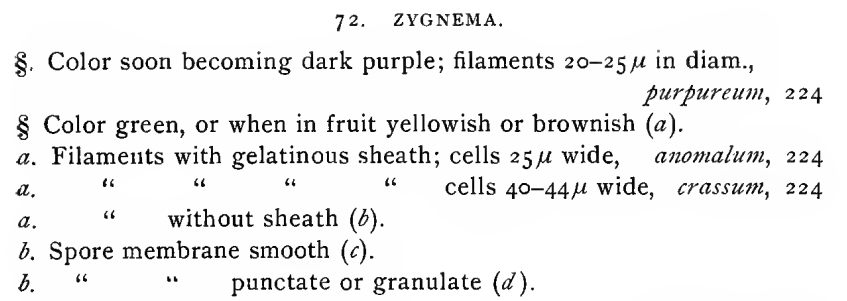
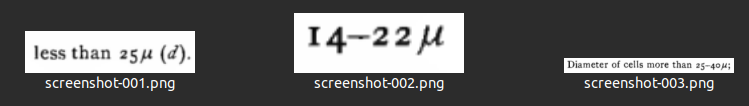
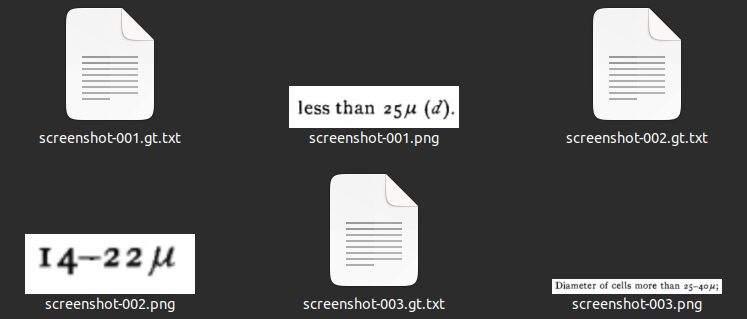
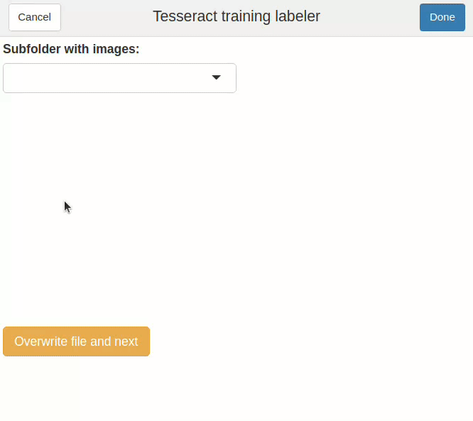

OCR with Tesseract
Let’s say that we need to OCR some non-standard text. For example, look at this extract from a 1893 book on algae:1
We can use the Tesseract library, the premier open source OCR solution. Tesseract is conveniently wrapped in the tesseract R package:2
library(tesseract)
ocr("algae_sample.png", engine = tesseract(language = "eng")) |> cat()72. ZYGNEMA,
§. Color soon becoming dark purple; filaments 20-25 in diam.,
purpureum, 224
§ Color green, or when in fruit yellowish or brownish (a).
a. Filaments with gelatinous sheath; cells 25 wide, anomalum, 224
a, “ 7 “ C cells 40-444 wide, crassum, 224
a. “ without sheath (4).
&, Spore membrane smooth (¢).
bf “ punctate or granulate (2).Pretty good! Fiddling with image preprocessing should get us even better results. But there’s a bigger challenge here: the micron (µ) is not part of Tesseract’s English character set. No matter how clean the input image is, off-the-self Tesseract will never detect those characters. This particular book is full of microns… what can we do?
Fine-tuning
Starting in version 4, Tesseract uses a neural network for text detection. This means that we can re-train the model for our particular task! There are many ways to do so, from training a new language from scratch to fine-tuning an existing one.3 Here we’ll do the latter (which is easier to do and should yield better results in simple-ish cases like this one), using the English language (eng) as our base. I’ll name my new “language” alg (this will be relevant for some later steps).
Creating “ground truth” data
First, we need some “ground truth” data for training. These should be image snippets from our document(s), with the corresponding text attached. There are scripts to generate all possible image snippets in a page. But here we are mostly interested in the microns and other special symbols, so I decided to simply take screenshots of possibly-important text. I took 52 screenshots from a couple of the other pages in the book (you can experiment with more), and threw them into a folder. This folder must be named {language}-ground-truth/, so I named it alg-ground-truth/ (download it here to follow along). Here are a some of the screenshots:

alg-ground-truth/ folder. File names do not really matter (so you can just throw your raw screenshots in there if you want to).
Now to the most time-consuming part. We need to make the text transcripts for these images. Tesseract expects files with the gt.txt extension, and the same name as the image. For the example above, we should have a screenshot-001.gt.txt file, containing the following text: “less than 25µ (d).” And a screenshot-002.gt.txt file, containing “14-22µ”. And so on…
Making these files by hand gets old quickly, so I’ve made a little R package, tesseractgt, to speed things up. We first install it:
install.packages("remotes") # only if `remotes` is not installed
remotes::install_github("arcruz0/tesseractgt")A first step to save us time is to create boilerplate .gt.txt files automatically:
library(tesseractgt)
create_gt_txt(folder = "alg-ground-truth", # folder with images
extension = "png", # extension of image files
engine = tesseract::tesseract(language = "eng"))This creates all the needed gt.txt files:

alg-ground-truth/ folder with gt.txt files made by create_gt_txt().
Note that the text files are already pre-filled with OCR text from tesseract, via the engine = argument. These pre-fills will have problems (otherwise we wouldn’t be fine-tuning!), but it is usually quicker to correct them than to write all text from scratch. You can also specify engine = NULL to generate empty gt.txt files.
Now we need to correct these gt.txt files by hand. We can use a text editor, or the addin provided by tesseractgt:
correct_gt_txt() # or "Addins > Correct ground truth files" in RStudio
correct_gt_txt().
And that’s it! We can now use the alg-ground-truth/ folder to fine-tune the neural network.
Running the fine-tuning
Here we will use the tesstrain GitHub repository, by the Tesseract developers. The procedure should work on Unix systems.4 On Ubuntu 22.04 (LTS), I did not have to install anything on top of Tesseract (but check the previous link if you have any issues with dependencies). We start by cloning the repository from our console (you can also download the zipped folder from GitHub):
git clone https://github.com/tesseract-ocr/tesstrain.gitWe first go to our new tesstrain/ folder and set up some configuration files:
cd tesstrain # wherever you saved this folder
make tesseract-langdataWe now move our previously-created alg-ground-truth/ folder to tesstrain/data/. If we want to, we can use the command line from the tesstrain/ folder:
mv ~/location/alg-ground-truth data # should replace ~/locationNow we need to obtain the base language for training, which would be English in our case. We start by downloading the eng.traineddata file from the tessdata_best GitHub repository.5 We need to place this file in the tesstrain folder, in a usr/share/tessdata/ subfolder. If we want to, we can use the command line to create the subfolder and download the file from GitHub (change eng with your base language if needed):
mkdir -p usr/share/tessdata
wget -P usr/share/tessdata https://github.com/tesseract-ocr/tessdata_best/raw/main/eng.traineddataAt this point, our tesstrain/ folder should look like this:
├── generate_gt_from_box.py; generate_line_box.py; generate_line_syllable_box.py;
├── generate_wordstr_box.py; normalize.py; shuffle.py
├── README.md; LICENSE; Makefile; requirements.txt; ocrd-testset.zip
├── data/
│ ├── alg-ground-truth/
│ │ ├── screenshot-001.gt.txt
│ │ ├── screenshot-001.png
│ │ ├── screenshot-002.gt.txt
│ │ ├── screenshot-002.png
│ │ ├── (etc)
│ └── langdata/
│ ├── Arabic.unicharset
│ ├── Armenian.unicharset
│ ├── (etc)
├── plot/
│ ├── plot_cer.py
│ └── plot_cer_validation.py
├── src/
│ └── training/
│ ├── language_specific.py
│ ├── tesstrain.py
│ └── tesstrain_utils.py
└── usr/
└── share/
└── tessdata/
└── eng.traineddataFinally, we can fine-tune! The command below will provide sensible defaults for us, fine-tuning in the “Impact” mode.6 In order to modify the fine-tuning hyperparameters (for example, setting a different learning rate or data splitting ratio), consult the tesstrain documentation and modify the command below.
make training MODEL_NAME=alg START_MODEL=eng FINETUNE_TYPE=ImpactFor our example with 52 “ground truth” images, the fine-tuning only took a couple of minutes to run on my laptop.
The command should have created a file named data/alg.traineddata, with our new fine-tuned model. We now need to get this to our system-wide folder of installed Tesseract languages. We can use R to find out where this folder is:
tesseract::tesseract_info()$datapath # my output is specific to Linux[1] "/usr/share/tesseract-ocr/5/tessdata/"And we simply copy-paste our .traineddata file to this folder. Using the command line:
sudo cp data/alg.traineddata /usr/share/tesseract-ocr/5/tessdata/That’s it, we’re done with fine-tuning! We can now use Tesseract as usual for whatever task we are interested in, with our new “alg” language already available. You can check the available languages from R, with tesseract::tesseract_info()$available.
Results
Below we have the original image, and then our initial and refined OCR results side by side.
ocr("algae_sample.png", engine = tesseract(language = "eng")) |> cat()
ocr("algae_sample.png", engine = tesseract(language = "alg")) |> cat()72. ZYGNEMA,
§. Color soon becoming dark purple; filaments 20-25 in diam.,
purpureum, 224
§ Color green, or when in fruit yellowish or brownish (a).
a. Filaments with gelatinous sheath; cells 25 wide, anomalum, 224
a, “ 7 “ C cells 40-444 wide, crassum, 224
a. “ without sheath (4).
&, Spore membrane smooth (¢).
bf “ punctate or granulate (2).72. ZYGNEMA.
§. Color soon becoming dark purple; filaments 20-25µ in diam.,
purpureum, 224
§ Color green, or when in fruit yellowish or brownish (a).
a. Filaments with gelatinous sheath; cells 25µ wide, anomalum, 224
a. " & " L cells 40-44µ wide, crassum, 224
a. " without sheath (b).
b. Spore membrane smooth (c).
bL " " punctate or granulate (d).We got the microns! We also had some other minor improvements in the last couple of lines, possibly due to supplying the model with more examples of the specific typography. There are still some errors, that we might be able to solve with more aggressive fine-tuning, or with ex-post corrections. In any case, I hope that this blog post and tesseractgt are useful!
Footnotes
Stokes, A. (1893). Analytical keys to the genera and species of the fresh water Algae and the Desmidieae of the United States. Portland, Conn.: Edward F. Bigelow. Public domain, scanned by the Cornell University Library.↩︎
See the package’s GitHub page for installation instructions.↩︎
See Tesseract’s training documentation for more information.↩︎
On Windows, the safest choice is probably to use the Windows Subsystem for Linux (WSL).↩︎
The procedure will only work with these “best”
{language}.traineddatafiles, so don’t try to use any of the lighter ones.↩︎There are other modes, but in my limited testing, this one provides good results quickly. Check out the
tesstraindocumentation for more options.↩︎